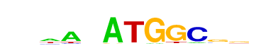

| p-value: | 1e-135 |
| log p-value: | -3.115e+02 |
| Information Content per bp: | 1.663 |
| Number of Target Sequences with motif | 578.0 |
| Percentage of Target Sequences with motif | 3.79% |
| Number of Background Sequences with motif | 370.2 |
| Percentage of Background Sequences with motif | 1.11% |
| Average Position of motif in Targets | 56.7 +/- 21.5bp |
| Average Position of motif in Background | 48.1 +/- 27.5bp |
| Strand Bias (log2 ratio + to - strand density) | -0.6 |
| Multiplicity (# of sites on avg that occur together) | 1.00 |
| Motif File: | file (matrix) reverse opposite |
| Rank | Match Score | Redundant Motif | P-value | log P-value | % of Targets | % of Background | Motif file |
| 1 | 0.904 |  | 1e-132 | -304.143473 | 4.24% | 1.37% | motif file (matrix) |
| 2 | 0.922 | 1e-102 | -235.664779 | 4.35% | 1.67% | motif file (matrix) | |
| 3 | 0.629 | 1e-75 | -174.548783 | 3.10% | 1.17% | motif file (matrix) | |
| 4 | 0.604 | 1e-63 | -146.074321 | 3.19% | 1.34% | motif file (matrix) | |
| 5 | 0.704 | 1e-59 | -137.127643 | 0.43% | 0.02% | motif file (matrix) | |
| 6 | 0.701 | 1e-48 | -111.155347 | 7.14% | 4.48% | motif file (matrix) | |
| 7 | 0.642 | 1e-36 | -84.724917 | 2.52% | 1.22% | motif file (matrix) | |
| 8 | 0.630 | 1e-28 | -65.914610 | 2.13% | 1.07% | motif file (matrix) | |
| 9 | 0.745 | 1e-26 | -61.946026 | 1.53% | 0.69% | motif file (matrix) | |
| 10 | 0.804 | 1e-21 | -48.907753 | 29.14% | 25.71% | motif file (matrix) | |
| 11 | 0.616 | 1e-15 | -35.929044 | 0.11% | 0.01% | motif file (matrix) |